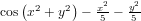

Abelhas (aka Lua PSO) is a Lua library for particle swarm optimization (PSO), a population-based optimization algorithm inspired by the social behavior of some species, like fishes and birds, and used for solving a multitude of numeric problems with linear and discrete search spaces. The first particle swarm optimization algorithm was invented by Dr. James Kennedy and Russell Eberhart, in 1995, and since then several versions and variants have been created. Abelhas is one of them.
For people familiarized with particle swarms, Abelhas is a particle swarm optimizer that uses global neighborhood, speed limits and particle replacement. It does not have the concept of inertia.
The solver may be seen as being a multi-dimensional solution space, where each dimension gives the value of one variable from the problem. The problem is initialized by randomly placing some number of "particles" (candidate solutions) in this search space. Each particle are ranked with a fitness function and will remember is own best position ("pbest") on the search space and will be able to "see" the best particle in the swarm ("gbest") and accelerate itself towards an intermediate position between its own best position and the position of the best particle in the swarm. This step is repeated for each particle in the swarm until some termination criteria is met (maximum fitness reached, maximum number of iterations or too many iterations without any improvement in the fitness of the best particle of the swarm). When this criterion is met, it is said that the problem converged to a solution.
In order to get the algorithm to work, several parameters must be supplied:
There are several references to PSO in the literature that may provide a good understanding of theses concepts. Follows a small selection:
Abelhas is copyrighted free software distributed under the same license that Lua 5.1, so, if you can use Lua in your application, you can use Abelhas too. The full license text follows:
Abelhas (c) 2007 Alexandre Erwin Ittner Permission is hereby granted, free of charge, to any person obtaining a copy of this software and associated documentation files (the "Software"), to deal in the Software without restriction, including without limitation the rights to use, copy, modify, merge, publish, distribute, sublicense, and/or sell copies of the Software, and to permit persons to whom the Software is furnished to do so, subject to the following conditions: The above copyright notice and this permission notice shall be included in all copies or substantial portions of the Software. THE SOFTWARE IS PROVIDED "AS IS", WITHOUT WARRANTY OF ANY KIND, EXPRESS OR IMPLIED, INCLUDING BUT NOT LIMITED TO THE WARRANTIES OF MERCHANTABILITY, FITNESS FOR A PARTICULAR PURPOSE AND NONINFRINGEMENT. IN NO EVENT SHALL THE AUTHOR OR COPYRIGHT HOLDER BE LIABLE FOR ANY CLAIM, DAMAGES OR OTHER LIABILITY, WHETHER IN AN ACTION OF CONTRACT, TORT OR OTHERWISE, ARISING FROM, OUT OF OR IN CONNECTION WITH THE SOFTWARE OR THE USE OR OTHER DEALINGS IN THE SOFTWARE. If you use this package in a product, an acknowledgment in the product documentation would be greatly appreciated (but it is not required).
Abelhas is a pure-Lua library and can be downloaded from the
Abelhas project
page on LuaForge. After
downloading, just unpack the distribution package and copy the file
pso.lua to the Lua packages directory in your system.
Abelhas uses the Lua 5.1 package system that allows you to simply do a
require "pso"
call to load up the library.
This constant keeps a string with the version of the library.
Theses constants keeps reasons for the termination of the algorithm, returned by the method 'run'.
Constructor. Returns a new swarm with the given number of dimensions.
Sets the precision for all dimensions (in number of decimal places). 'nil' disables this feature and allows the values to assume the maximum precision allowed by the Lua numbers.
Sets the precision for the dimension 'dim', for 'decs' decimal places. 'nil' disables this feature and allows the values to assume the maximum precision allowed by the Lua numbers.
Returns the precision for the dimension 'dim', as the number of decimal places.
Sets the cognitive factor (number, 0 or greater).
Returns the cognitive factor (number, 0 or greater).
Sets the social factor (number, 0 or greater).
Returns the social factor (number, 0 or greater).
Sets the maximum speed for a particle in the given dimension.
Returns the maximum speed for a particle in the given dimension.
Sets the maximum speed for all dimensions.
Sets the probability of a particle being replaced by another, randomly generated, one. This feature tries to avoid local optima by the simulation of the death and replacement of a particle. The probability must be a number between 0 and 1. The best particle in the swarm is never replaced.
Gets the probability of a particle being replaced by another.
Sets the number of particles.
Returns the number of particles.
Sets the fitness function. The particle position will be passed as an argument for each dimension. The fitness function must return the fitness of the given particle as a number with higher values for better solutions.
Sets the limits for the given dimension.
Returns the minimum and maximum values for the given dimension.
Sets the limits for all dimensions.
Makes the solver round up the fitness to 'decs' decimal places. The value must be a positive integer or 'nil' to disable this feature.
Returns the number of decimal places used to round up the fitness values, or 'nil' if this feature is not used.
Sets the maximum fitness as a termination criterium. Fitness must be a number or 'nil' to disable its use as termination criterium.
Returns the maximum fitness, or 'nil' if it is not used as termination criteria.
Sets the maximum number of iterations as a termination criterium. This must be a integer greater than zero or 'nil' to disable its use as termination criterium.
Returns the maximum number of iterations, or 'nil' if it is not used as termination criteria.
Sets the maximum number of stagnated iterations as a termination criterium. This must be a integer greater than zero or 'nil' to disable its use as termination criterium.
Returns the maximum number of stagnated iterations, or 'nil' if it is not used as termination criteria.
Sets a function to be called when a new best particle if found. The function will receive the particle position, an per dimension. Passing 'nil' disables this feature.
Sets a function to be called when a particle is replaced. The function will receive the position of the dead particle, an per dimension. Passing 'nil' disables this feature.
Sets a function to be called for each iteration of the optimizer. The function will receive a array of particles as first argument and the number of the current iteration as second argument. Each particle in the particle array is a table with the following fields:
fit the fitness value for the best position (number); x particle's position in the n-dimensional space (array of numbers); b particle's best position (array of numbers); v particle's velocity (array of numbers).these values may be read, but SHOULD NOT be changed or redefined. Passing 'nil' disables this feature.
Warning: Abuse of this feature may slow the algorithm down!
Runs the algorithm and returns a array with the position of the particle, the fitness, the reason of termination (pso.TERM_CONVERGED, pso.TERM_MAX_ITERATIONS, or pso.TERM_MAX_STAGNATION) and the total of iterations.
There are several samples in the "examples" directory within the distribution package. Follows a example intended to optimize the function :
require "pso"
math.randomseed(os.time()) -- Seeds the pseudo-random number generator
local swarm = pso.new(2) -- Creates a new swarm with 2 dimensions
swarm:setLimits(-3.0, 3.0) -- Search space
swarm:setParticles(10) -- 10 particles
swarm:setC1(1.5) -- Cognitive factor
swarm:setC2(2.0) -- Social factor
swarm:setMaxSpeed(1.0) -- Maximum speed
swarm:setReplacementProb(0.05) -- 5% of the particles die each iteration
swarm:setPrecision(6) -- Maximum precision of 6 decimal places
swarm:setFitnessRounding(6) -- Rounds up the fitness to 6 places
swarm:setMaxFitness(1.0) -- Stops when the maximum fitness is reached
swarm:setMaxStagnation(20) -- Stops if stalled for 20 generations
swarm:setFitnessFunction(function (x, y)
return math.cos(x^2 + y^2) - x^2/5 - y^2/5
end)
local ret, fit, reason, iter = swarm:run()
print("Done", ret[1], ret[2], fit, reason, iter)
Author: Alexandre Erwin Ittner
E-mail: aittner#gmail.com
(e-mail obfuscated to avoid spam-bots. Please replace the "#" with an "@").
GnuPG/PGP Key: 0x0041A1FB
(key fingerprint: 9B49 FCE2 E6B9 D1AD 6101 29AD 4F6D F114 0041 A1FB).
Homepage: http://users.netuno.com.br/aittner/.
Location: Jaraguá do Sul, Santa Catarina, Brazil.